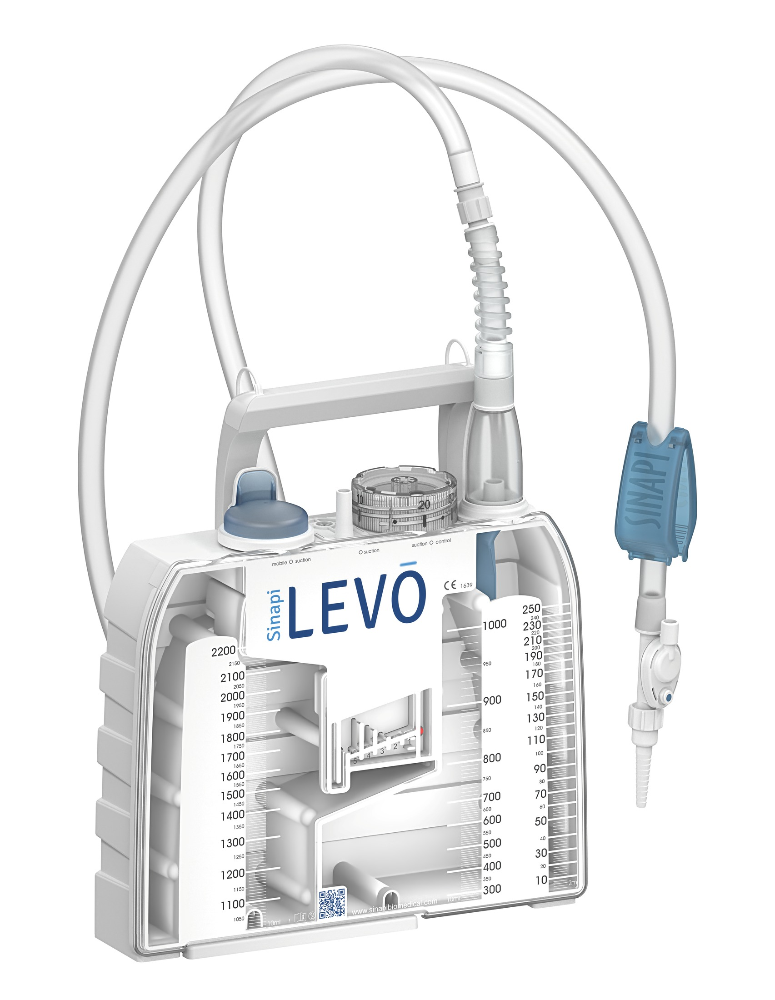
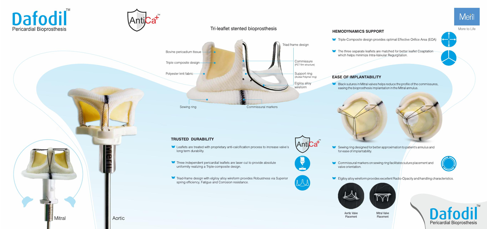
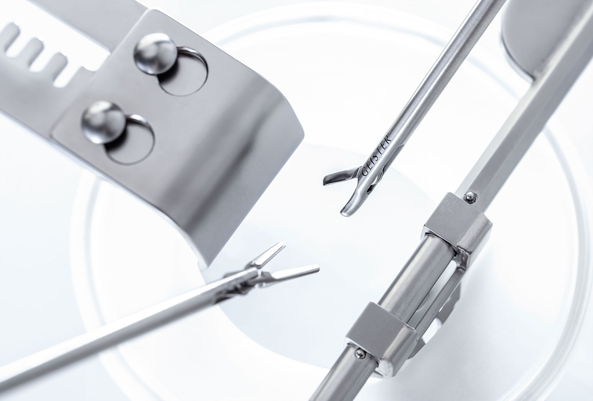

Виріб під сценарій застосування
Напрям втручання, модель, розмір, комплектація, сумісність і технічні матеріали для професійного розгляду.
Обрати напрямLotus Med постачає клапанні рішення Meril, дренажні системи Sinapi та хірургічні інструменти Geister. Допомагаємо узгодити модель, комплектацію й документи для конкретної закупівлі.


Клінічна команда і фахівець із закупівель отримують різні дані, але працюють з однією погодженою позицією.
Напрям втручання, модель, розмір, комплектація, сумісність і технічні матеріали для професійного розгляду.
Обрати напрямКаталожне найменування, опис предмета закупівлі, комерційна пропозиція та документи, передбачені конкретною процедурою.
Підготувати запит
Myval і Dafodil для клапанного напряму, коронарні й периферичні стент-системи, а також ендопротези колінного та кульшового суглобів.
Перейти до MerilЛінійка LEVO для грудного дренування. Допомагаємо зіставити моделі за форматом системи, конфігурацією та потребами відділення.
Перейти до Sinapi
Кардіо- та судинна хірургія, MICS і VATS, мікроінструменти, neuro/spine, ретракторні системи та SurgiBOX.
Перейти до GeisterМи не замінюємо рішення клінічної команди. Наша робота — точно зафіксувати потребу, підготувати пропозицію та супроводити поставку.
Отримуємо назву виробу, клінічний сценарій, кількість або попередню специфікацію.
Звіряємо модель, артикул, розмір, склад комплекту та очікуваний строк.
Готуємо комерційну пропозицію й доступні матеріали відповідно до предмета закупівлі.
Погоджуємо умови та організовуємо передачу товару закладу в Україні.
Надішліть те, що вже маєте. Ми структуруємо запит і повернемося з уточненнями.